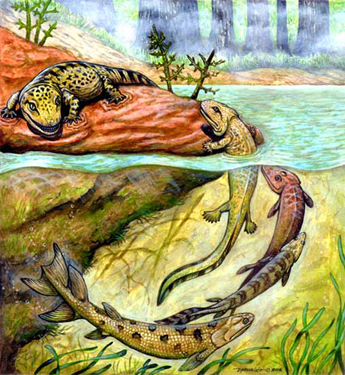

O Período Devoniano se estende entre 416 milhões à 354 milhões e é subdividido pelas épocas: Inferior (a mais antiga), Média e Superior (a mais recente).
Neste período, as principais transformações aconteceram na flora, com o crescimento exponencial de pequenas plantas terrestres através do desenvolvimento dos esporos. Com este processo, as plantas conseguiram se fertilizar com as sementes e atingir a altura de árvores. Elas formaram os primeiros bosques de que se tem registro, com o surgimento dos licopódios e samambaias por exemplo.
Porém na fauna, também houve diversas mudanças, por isso alguns especialistas nomeiam a era como a ‘idade dos peixes’, pois surgem os placodermos (peixes encouraçados que parecem piranhas) e os primeiros tubarões. Outros peixes de água doce desenvolveram pulmões, que depois passariam a serem conhecidos como anfíbios, vivendo em ambiente terrestre e aquático.
O planeta passou por uma imensa reconstrução geológica, que resultou em um intenso momento vulcânico: o continente Laurentia (onde fica a América do Norte) colide com a Báltica (parte da Europa), formando a Euramérica. Com isso, o globo fica reduzido a três grandes continentes: Euramérica, Sibéria e Gondwana (o maior, que abrangia as regiões da Antártica, parte da África, América do Sul e Oceania).

https://bit.ly/2lYTazn
A Ásia era subdividida em 11 microcontinentes, onde havia grandes quantidades de carbonatos, evaporitos, arenitos vermelhos e recifes, o que indica que havia uma temperatura climática quente.
Já em Gondwana o frio dominava, por conta de sua terra úmida que abrigava argilitos e arenitos claros. Entretanto, mais ao sul (onde fica a região da Austrália), há indícios de que havia um clima tropical graças ao descobrimento de materiais secos que datam da época.
O termo Devoniano foi definido em 1939 pelos especialistas Adam Sedgwick e Roderick Murchison, que queriam dar procedimento aos estudos sobre sequência sedimentar marinha.